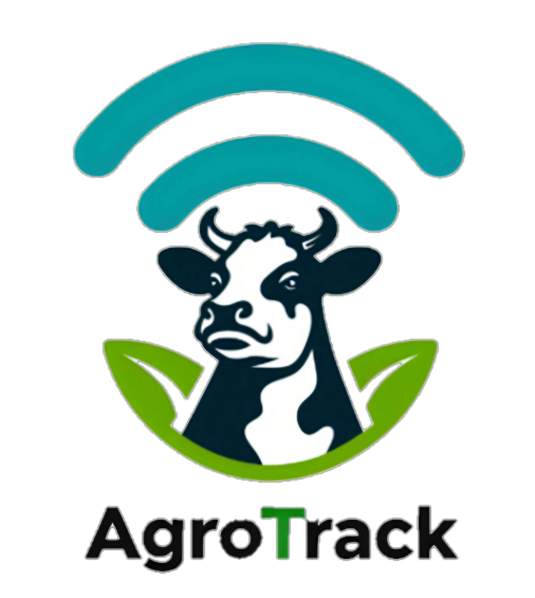

Inicio
Definición
Planificación
Ejecución
Cierre
Planificación
📄 4. Plan de Gestión
📄 5. Planificación de Tareas
📄 6. WBS - RACI
📄 7. Estimación Montecarlo
📄 8. Estimación COCOMO
📄 9. Estimación Puntos de Función
📄 10. Estimación de Costos
📄 11. Plan de Comunicación
📄 12. Plan de Control de Cambios
📄 13. Plan de Calidad
📄 14. Plan de Gestión de Riesgos
✖